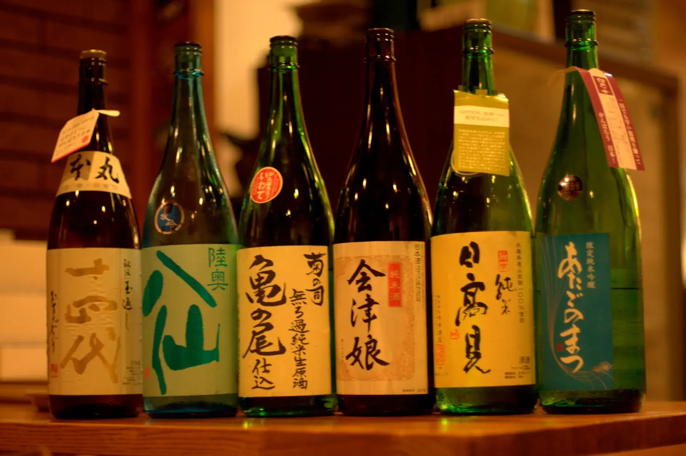
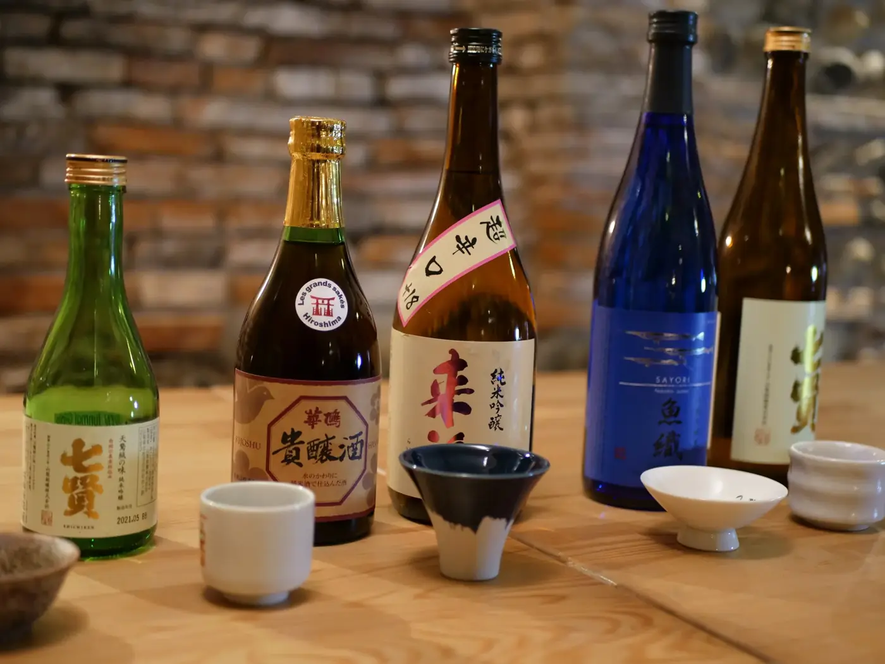

日本酒
三十本のうち、まずは八本。
※銘柄名はこのコンセプト用の架空のものです。グラスは90ml、お燗もできます。
冬の月FUYU NO TSUKI
新潟 · 辛口。すっきり辛口。塩の串、とくにささみに。
辛さコク山の端YAMANOHA
秋田 · 辛口。米のうまみがあって、後味は軽い。
辛さコク潮騒SHIOSAI
高知 · 辛口。海の町の超辛口。せせりと。
辛さコク朱鷺色TOKIIRO
広島 · ふくよか。ふくよかな純米。お燗でタレの串に。
辛さコク蔵の灯KURA NO HI
福島 · ふくよか。熟成三年。レバーとつくねに。
辛さコク白桃HAKUTO
岡山 · 香り。桃のような香り。最初の一杯や、甘いものと。
辛さコク春霞HARUGASUMI
長野 · 香り。うすにごりの微発泡。季節限定。
辛さコク鳥と炭 純米TORI TO SUMI JUNMAI
埼玉 · ふくよか。近くの蔵とつくった店の酒。迷ったらこれ。
辛さコク
